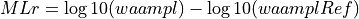
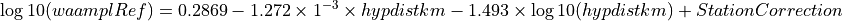

MLr¶
The GNS/Geonet local magnitude
Description¶
The MLr magnitude provides a GNS/Geonet local magnitude (Ristau et al. [54]). MLr magnitudes are implemented by the mlr plugin. It is a modified version of the gempa ML magnitude developed at the Liverpool developer meeting (gempa GmbH [26]) based on the SED MLh magnitude. The mlr plugin is designed to use the MLv station amplitudes for computing MLr magnitudes. The magnitude uses a station correction term and the hypocentral distance.
Amplitude¶
The MLr amplitude calculation is that of MLv.
Station Magnitude¶
The mLr plugin calculates individual MLr station local magnitudes from MLv amplitudes as:


with
waampl: the MLv amplitude.
hypdistkm: the distance from the sensor to the hypocenter in kilometers.
A(station): Station correction is given by module.trunk.NZ.WEL.MLR.params, A. Station Correction is set to be distance dependent.
Format: “UpToKilometers A ; UpToNextKilometers A “. The option “nomag” disables the station magnitude.
General parameters:
Amplitude unit in SeisComP: millimeter (mm) from MLv
Time window: 150 s by scautopick or distance dependent
Distance range: 0 - 20 deg (hypocentral distance, hard-coded)
Depth range: 0 - 800 km (hard-coded)
Network magnitude¶
The GNS/Geonet Mlr local magnitude is using the default SeisComP behaviour for the automatic network magnitudes. Hard-coded ranges are 0-20 degrees maximum distance and 800 km maximum depth.
Configuration¶
Add the mlr plugin to the existing plugins in the global configuration. Set the calibration parameters in the global bindings. Add MLr to the list of magnitudes in the configuration of scamp and scmag for computation and in scesv for visibility.